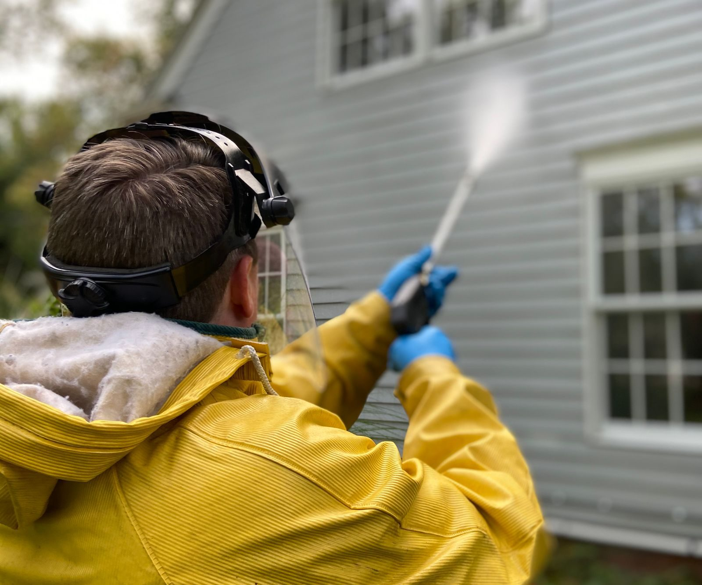
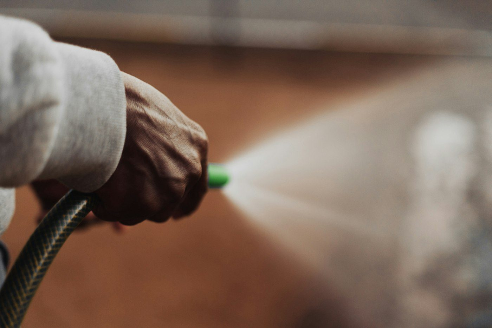
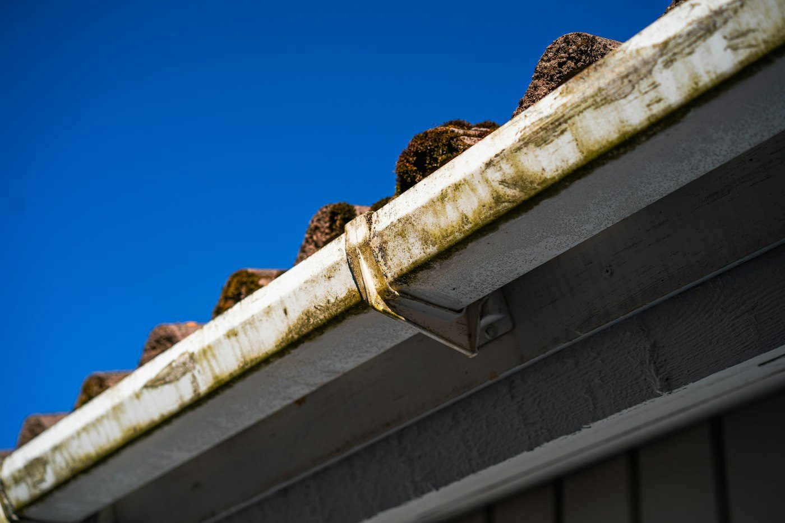
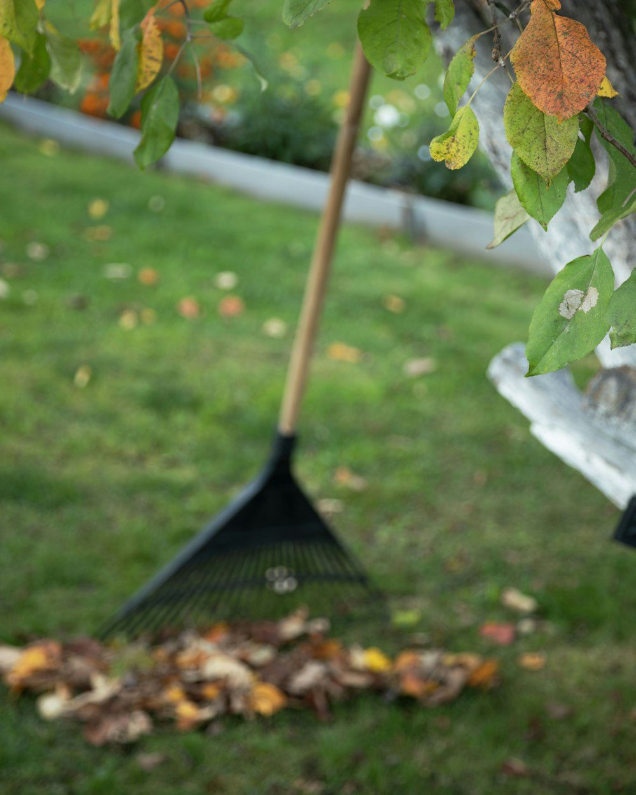
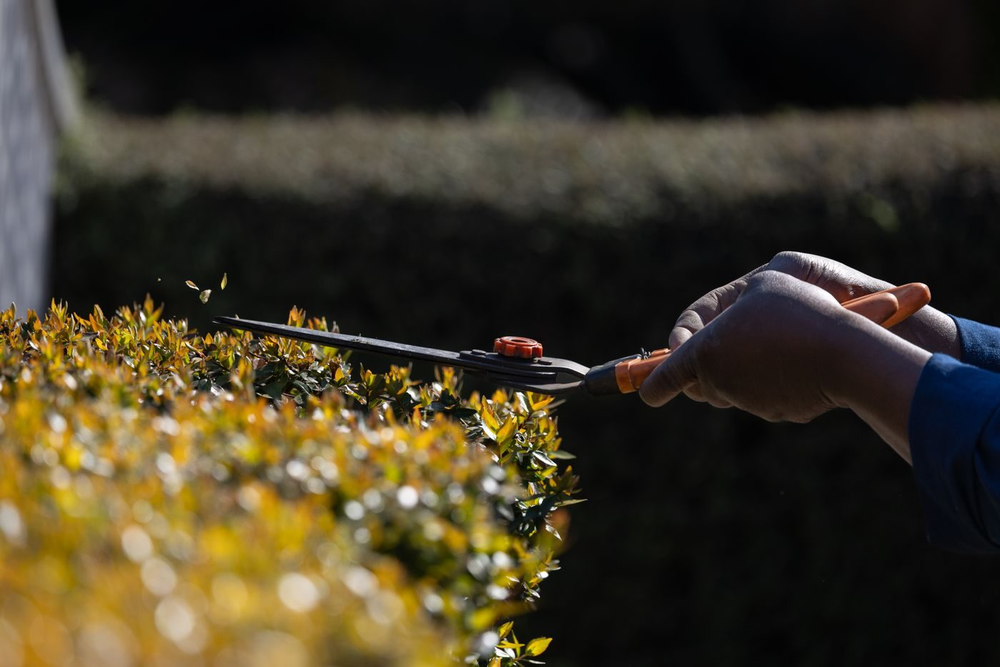
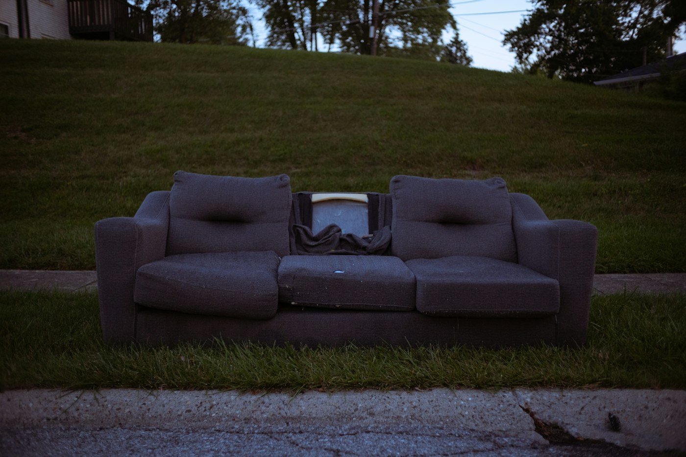
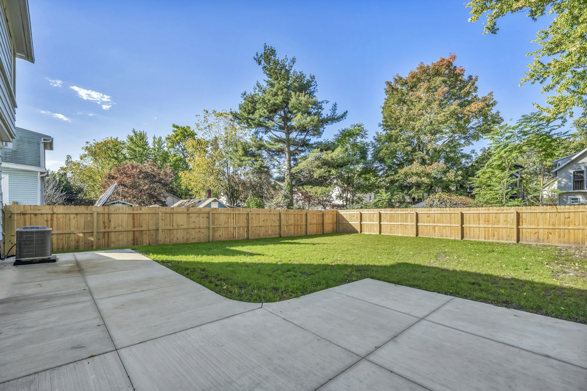
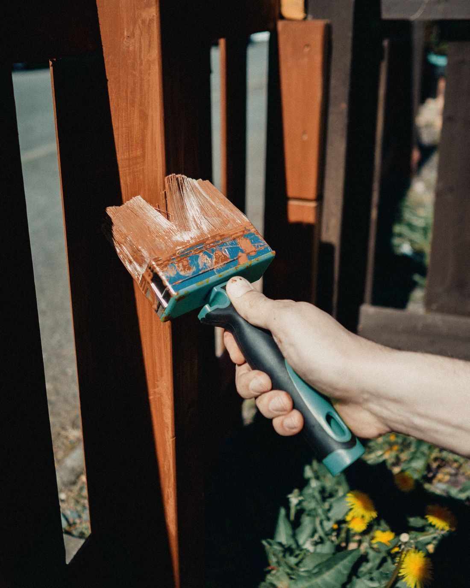
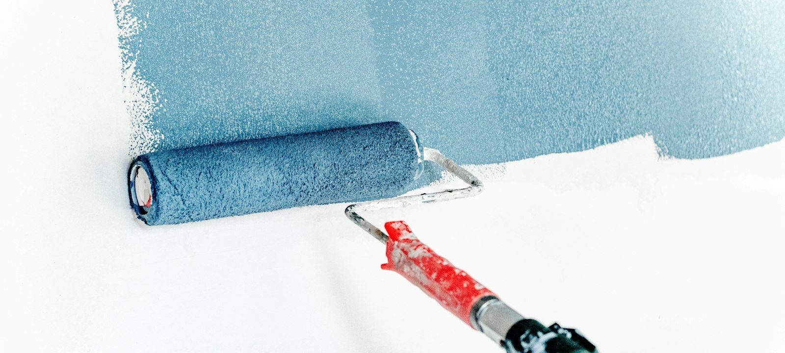
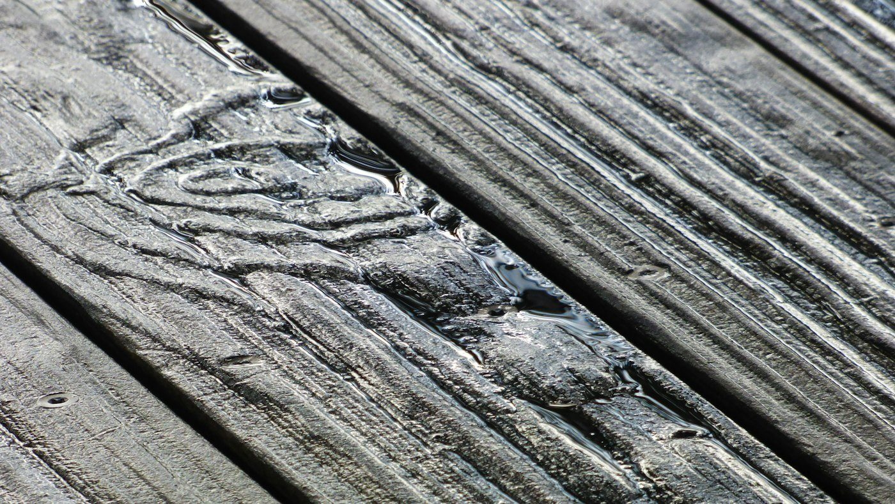

Houses washed. Yards cleaned up. Fences built.
Power washing, lawn and yard care, fences and painting in Billings, MT.
Nextdoor Neighborhood Favorite, 2024 and 2025

Monday to Saturday, 7 AM to 9 PM
Call ahead to confirmWashing
Power washing, house washing and gutter cleaning.
Power washing
Call and tell us what is dirty and about how big it is.
House washing
The outside of your house, washed down.
Gutter cleaning
For gutters holding leaves and grit.


Lawn and yard
One call for the grass, the hedge, the leaves and the pile by the fence.
- Lawn service
- Yard clean outs
- Leaf clean up
- Hedge cleanup
- Junk removal

Leaf clean up

Hedge cleanup

Junk removal
We build fences
Call and tell us where the fence goes and about how long it runs. We stain and seal too.


Stain and seal
Painting and handy man work
Painting, exterior
The outside of the house.
Painting, interior
The rooms inside.
Handy man work
Call and describe what needs doing.

How it works
Pick the job to see what to mention when you call.
Pick the job
Washing, lawn and yard, a fence or painting.
Call us
The number is (406) 561 0866. Call ahead to confirm hours.
Describe it
Use the short list for your job, and ask your questions.

Call Pow-A-Wash LLC
Washing, yards, fences and painting in Billings, MT.
(406) 561 0866Town Billings, MT
Hours
- Monday to Saturday
- 7 AM to 9 PM
- Sunday
- Closed
Call ahead to confirm